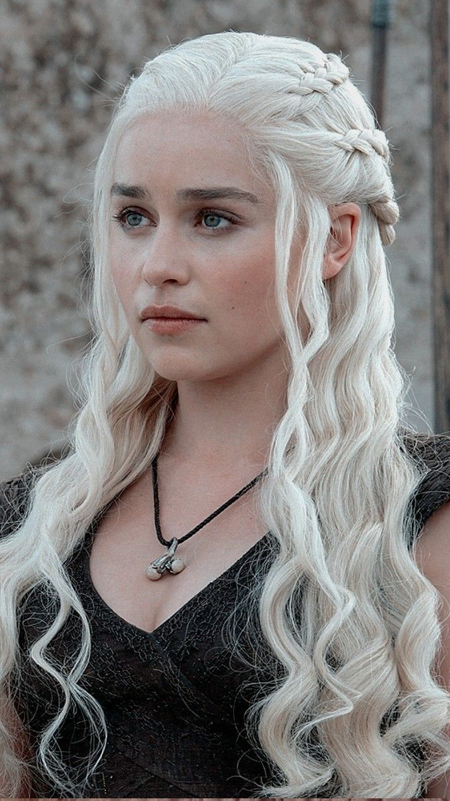
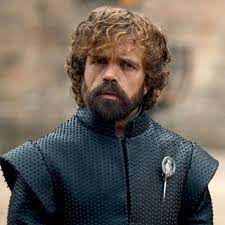
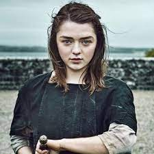

| Nombre | Foto | Breve Descripción |
|---|---|---|
| Daenerys Targaryen |  | Daenerys fue la única hija del rey Aerys II Targaryen y de su hermana-esposa, la reina Rhaella |
| Jon Snow | Jon Snow, nacido Aegon Targaryen, es el hijo de Lyanna Stark y el príncipe Rhaegar Targaryen, difunto príncipe de Rocadragón | |
| Tyrion Lannister |  | Tyrion Lannister es el tercer hijo de Lord Tyrion Lannister y Lady Joanna Lannister, y hermano menor de los mellizos Cersei y Jaime |
| Arya Stark |  | Arya Stark es la segunda hija de Lord Eddard Stark y Lady Catelyn Tully |
| Fuente: Wikipedia | ||